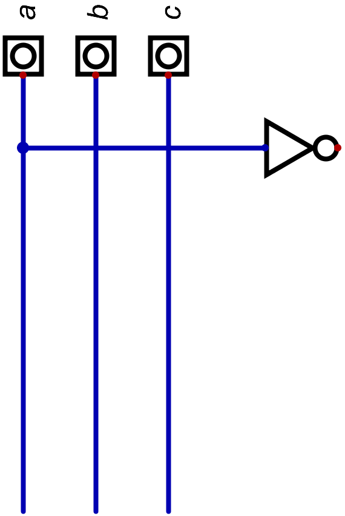
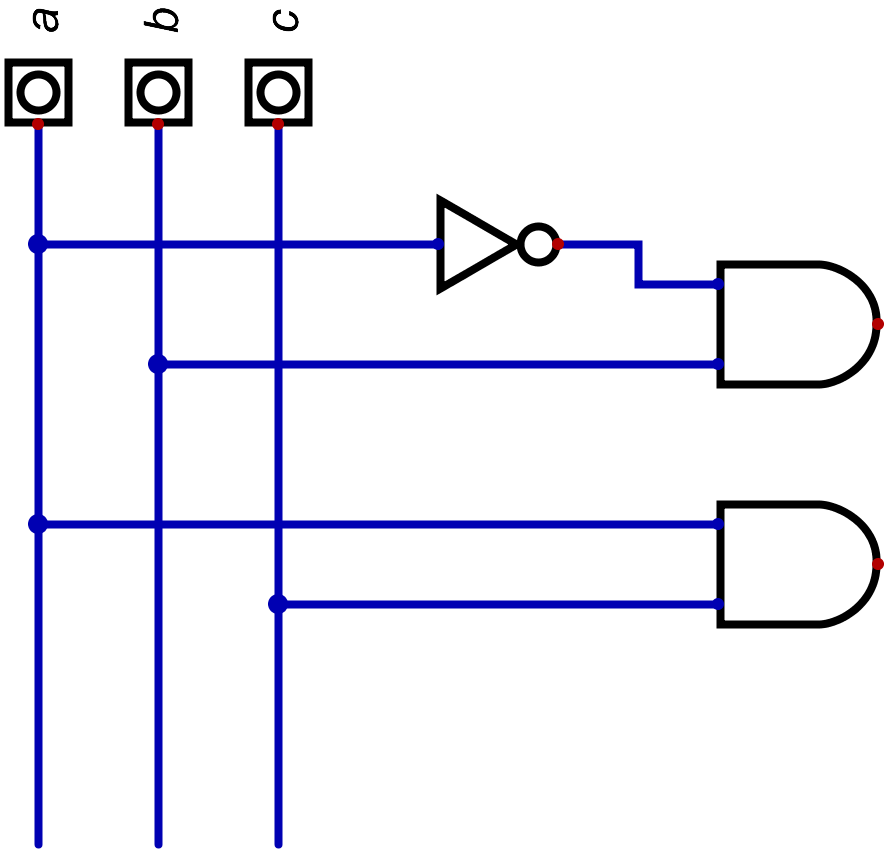

Definizione - Algebra binaria
L'algebra binaria è un sistema matematico formato da un insieme di operatori definiti assiomaticamente in grado di descrivere con una espressione ogni possibile funzione di variabili binarie.
Ogni algebra è definita da:
Ogni algebra è definita da:
- un insieme di simboli;
- un insieme di operazioni;
- un insieme di postulati.
- l'algebra di commutazione (AND, OR e NOT);
- l'algebra del NAND;
- l'algebra del NOR;
- l'algebra lineare.
Definizione - Algebra di commutazione
L'algebra di commutazione ("
switching algebra
") fu definita da Claude Shannon ed è composta da:
- i simboli \( \{ 0, 1 \}\) ;
- le operazioni \( \{ +, \cdot, ' \}\) , ovvero la somma logica (l'OR, \( +\) ), il prodotto logico (l'AND, \( \cdot\) ) e la complementazione (il NOT, \( '\) ).
- un insieme di postulati, corrispondenti alle tabelle della verità dell'AND, dell'OR e del NOT.
Definizione - Espressione
Un'espressione è una stringa finita di costanti, variabili, operatori e parentesi dove:
- si definiscono costanti i simboli \( 0\) e \( 1\) ;
- si definiscono variabili dei simboli che possono assumere il valore \( 0\) o \( 1\) ;
- ogni variabile e costante da sola è una espressione;
- \( A'\) , \( A \cdot B\) e \( A + B\) sono espressioni.
Definizione - Schema logico
Lo schema logico è la
descrizione grafica di una struttura
formata da simboli di gate e da collegamenti tra le loro linee di ingresso e di uscita.
Definizione - Da espressione a schema logico
Ogni struttura formata da gate connessi in serie e/o parallelo è descritta da una sola espressione ed ogni espressione descrive una sola struttura formata da gate connessi in serie e/o in parallelo. Esiste quindi una relazione 1:1.
Per individuare uno schema descritto da un'espressione è necessario partire dalle espressioni con priorità maggiore (quindi gli AND e le espressioni tra parentesi) sostituendole con lo schema equivalente.
Per individuare uno schema descritto da un'espressione è necessario partire dalle espressioni con priorità maggiore (quindi gli AND e le espressioni tra parentesi) sostituendole con lo schema equivalente.
Esempio - Creare lo schema logico da un'espressione
Si vuole creare lo schema logico corrispondente alla seguente espressione
\[ a' \cdot b + a \cdot c \]
innanzitutto dividiamolo in parentesi, ottenendo
\[ ((a') \cdot b) + (a \cdot c) \]
A questo punto, partendo dalle parentesi più interne, aggiungiamo componenti, ovvero
-
iniziamo dall'espressione
\( (a')\)
:

-
continuiamo con l'espressione
\( ((a') \cdot b)\)
:

-
e aggiungiamo l'espressione
\( (a \cdot c)\)
;

-
infine, uniamo i risultati di queste due espressioni con un gate OR, in modo da rappresentare l'espressione
\( ((a') \cdot b) + (a \cdot c)\)

Definizione - Da espressione a tabella della verità
Per ottenere la tabella della verità da un'espressione di
\( n\)
input è sufficiente sostituire ad ogni variabile il suo valore. Ripetendo tale processo per
\( 2^{n}\)
volte, ovvero provando ogni possibile combinazione di ingressi, si ottiene la tabella della verità.